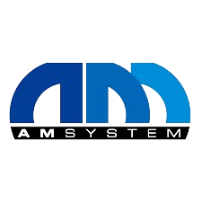

-
Freelance Developer & Hardware Technical Service
Encargado de desarrollar soluciones web en empresa del sector financiero e inmobiliario. Desarrollo de convenciones de código internas de acuerdo a buenas prácticas de programación. Liderar el equipo de desarrollo Backend.
-
Desarrollador Frontend - Guru Tech Vr
Encargado de desarrollar soluciones web en empresa del sector financiero e inmobiliario. Desarrollo de convenciones de código internas de acuerdo a buenas prácticas de programación. Liderar el equipo de desarrollo Backend.
-

Desarrollador Frontend - AM System
Encargado de desarrollar soluciones web en empresa del sector financiero e inmobiliario. Desarrollo de convenciones de código internas de acuerdo a buenas prácticas de programación. Liderar el equipo de desarrollo Backend.